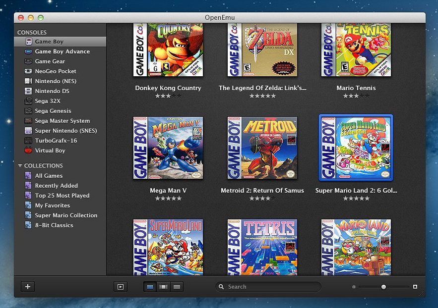

Game Place For Everyone
Go Crack a Game

The Web Games History Universe
Ever wondered how the universe was before web games were created?
How and when were web based games even created?
Scroll down and take a look at the web page history from A to Z with all the important dates.
Web Games History Milestones
| Web Games Development Milestone | |||
|---|---|---|---|
 |
1950s to the early 1960s The original video and computer games, such as NIMROD, OXO, and Spacewar, were designed for one or two people to play on a single computer dedicated solely to the game. (click to read more...)Later in the 1960s, computers started to offer time-sharing, allowing numerous users to share a computer at the same time. Computer terminal systems were developed, allowing users to operate the computer from a room other than the one in which it was kept. Soon after, modem links extended this range even further, allowing users to connect to their host computers via dial-up or leased telephone lines without having to be in the same building as the computer. As remote access became more common, "host-based" games were developed, in which users on remote computers linked to a central computer to play single-player and, later, multiplayer games. |
||
 |
1970s to early 1980s Packet-based computer networking technologies began to mature in the 1970s. Xerox PARC developed Ethernet-based local area networks between 1973 and 1975. (click to read more...)In addition, the ARPANET wide area network evolved from its 1969 beginnings, eventually leading to the foundation of the Internet on January 1, 1983. These LANs and WANs enabled network games, in which the game generated and received network packets; systems located across LANs or the Internet could play games in peer-to-peer or client–server modes. |
||
|  |
1980s to 1990s X Window System games; it was a widely used graphics system for Internet workstation PCs. The X Window System allowed a personal workstation to use software that was actually running on a considerably more powerful server computer, exactly as if the user was sitting at the server computer. (click to read more...)While remote control tools like VNC provide similar functionality, the X Window System embeds it in the operating system, allowing for considerably more tightly integrated functionality than these later alternatives; several applications running on different servers can show individual windows. Games based on remote X displays are not Internet-only games since X may use many networking systems; they can be played via DECnet and other non-TCP/IP network stacks. After that, commercial timesharing services appeared. With the advancement of time-sharing technology, it became feasible for corporations with extra capacity on their pricey computer systems to sell it. Service bureaus sprang up, such as Tymshare (1966), that sold time on a single computer to several consumers. Customers were often businesses that lacked the need or financial resources to purchase and run their own computer systems.X Window System games; it was a widely used graphics system for Internet workstation PCs. The X Window System allowed a personal workstation to use software that was actually running on a considerably more powerful server computer, exactly as if the user was sitting at the server computer. While remote control tools like VNC provide similar functionality, the X Window System embeds it in the operating system, allowing for considerably more tightly integrated functionality than these later alternatives; several applications running on different servers can show individual windows. Games based on remote X displays are not Internet-only games since X may use many networking systems; they can be played via DECnet and other non-TCP/IP network stacks. After that, commercial timesharing services appeared. With the advancement of time-sharing technology, it became feasible for corporations with extra capacity on their pricey computer systems to sell it. Service bureaus sprang up, such as Tymshare (1966), that sold time on a single computer to several consumers. Customers were often businesses that lacked the need or financial resources to purchase and run their own computer systems. |
||